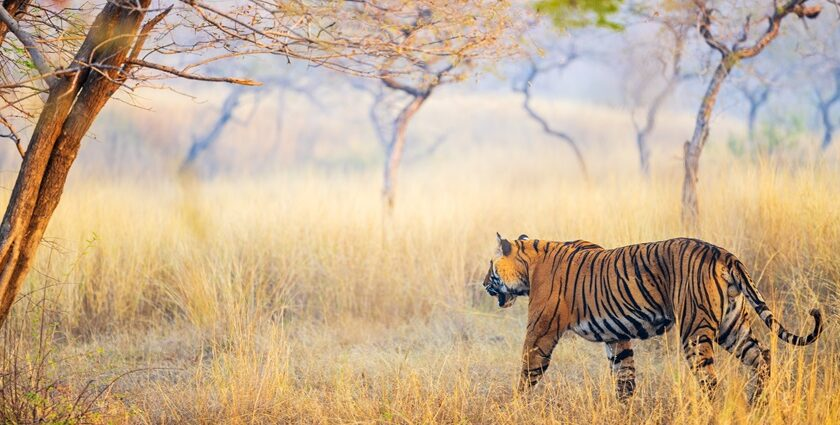

Mukundara Hills Tiger ReserveIndependent information & resources (MHTR)
Landscape
Mukundara Hills Tiger Reserve (MHTR) sits at a meeting point of ridges, ravines, rivers, and reservoirs.
If you only look for “tiger habitat”, you’ll miss the real story: a mosaic of dry forests, scrub, grass patches,
cliffs, and water that together support everything from vultures and otters to mahseer and pangolins.
What the land looks like
The reserve is shaped by the Mukundara hill ranges and surrounding plateaus—rocky slopes, narrow valleys,
seasonal streams, and broad river corridors. In the dry months, the terrain reads like a map of constraints:
where water persists, life concentrates; where it disappears, species adapt or move.
Valleys & nalas: seasonal drainage lines that become wildlife highways.
River corridors: the most biodiversity-dense strips—birds, reptiles, fish, mammals.
Grass–scrub patches: often underestimated, but critical for prey and ground birds.
Habitats (the mosaic, not a monolith)
MHTR isn’t one habitat. It’s a patchwork. That patchwork is the reason you can document everything from
wetland birds and turtles to dryland larks and antelope. When a site is managed as if it’s “just forest”,
the patchwork collapses—and biodiversity goes quietly with it.
Dry deciduous woodland
Seasonal canopy, leaf-fall rhythm, shade pockets, and a strong understory in good years.
Scrub & thorny edges
The “in-between” zones—often richest in small mammals, reptiles, and bird diversity.
Grass patches
Not wasteland. A functional ecosystem: larks, bushlarks, francolins/quails, foxes, wolves (where present),
and grazing pressure dynamics.
Riparian strips
Green threads along water—kingfishers, egrets, sandpipers, and crucial drinking points.
Reservoirs & wetlands
Winter migrants and resident waterbirds; fish diversity; turtles; crocodiles; otters.
Cliffs & rock faces
Nesting/roosting opportunities and thermal niches—important for raptors and scavengers.

Water shapes everything
In central India’s dry landscapes, water is the hidden infrastructure. Where water persists, you see
concentrated tracks, higher bird activity, and a chain reaction across the food web—from insects and fish
to predators and scavengers.
Monsoon: streams flow, grasses flush, breeding peaks for many birds and amphibians.
Summer: pressure test—wildlife funnels to perennial water; conflict risk rises.
Practical note for visitors and photographers: the “best” season depends on what you’re documenting—not just
what you want to see.
Landscape features worth documenting
If your goal is awareness (not just pretty pictures), document features that explain process—how the
system works and what threatens it.
Grassland continuity
Fragmentation is silent: fencing, conversion, invasive growth, unmanaged grazing pressure.
Riparian integrity
Bank erosion, sand mining pressures, pollution, and altered flow change everything upstream and down.
Perennial water points
Where water persists in summer, wildlife concentrates—great for monitoring, also high-risk for conflict.
Rocky refuges
Critical microhabitats for reptiles and small mammals; also human disturbance hotspots.
Edge zones
Villages, farms, highways—edges drive human–wildlife dynamics. Document edges, not only interiors.
Seasonal pulse
Same location, different month = different ecosystem. Repeat photography is underrated science.
Orientation map
Use a simple map for context: main ridges, waterbodies, and the broader corridor feel. Avoid publishing
sensitive locations (nest sites, den sites, or precise coordinates for threatened species).
Safe to show: general landscape, public viewpoints, non-sensitive trails.
Avoid: exact roost/nest locations, denning areas, and precise breeding sites.
How to explore responsibly
Landscape appreciation is conservation when it leads to better behavior: stay on approved routes, keep noise
low, don’t chase sightings, and treat water edges as high-sensitivity zones—especially in summer.
Noise: if your voice carries, you’re too loud.
Distance: long lens ≠ permission to approach.
Waste: carry it back. Always.
Share wisely: don’t geotag sensitive spots.
This page will evolve with field notes, repeat photographs, and verified updates.